Follow my adventures exploring this paradise island.
San Bartolomé de Tirajana
27°55′32″N 15°34′21″O
Santa Lucía de Tirajana
27°54′44″N 15°32′26″O
Arucas
28°07′06″N 15°31′24″O
Ingenio
27°55′17″N 15°25′57″O
Tejeda
27°59′51″N 15°36′50″O
moya
28°06′39″N 15°35′00″O
firgas
28°06′N 15°33′O
agaete
28°06′06″N 15°42′03″O
la aldea de san nicolás
27°58′57″N 15°46′48″O
agüimes
27°53′00″N 15°26′00″O
presa del pinto
arucas
--
1
This reservoir is located in the north of the island and has a beautiful walk (approximately 1 h) around it taking you along a footpath into a wooded area. Plenty of trees and plants to make the walk that little bit more special. You can cross over the dam at the other end and make your way down along a footpath. To access the presa take the GC-300 and you will see the turning at Barranco de los Bañaderos.
Presa de Tirajana - La Sorrueda
santa lucía de tirajana
--
1
Located in the Santa Lucia region this presa sits in
Barranco de Tirajana.
Take the winding road down from Mirador de la Sorrueda
(where I parked my car) into the valley bottom.
From here you can walk the track through Barranco de Tirajana.
There is a gravel road along the barranco which gives access to fincas
and electrical sub stations. The walk is surrounded by imposing cliff
walls towering above you. Numerous caves and side valleys all leading into the
ravine. The views are stunning and the walk is easy. Well worth a visit if you
want an easy walk with dramatic scenery.
barranco de berriel
san bartolomé de tirajana
--
1
Located in the south of the island starting Bahia Feliz.
This Barranco is approx 3.4km long with easy walking and
after the recent rains has many beautiful pools and waterfalls
to take a dip in. The views are stunning and the path to the
first pools is easy. To the bigger pools and waterfalls deeper
in the valley you do need to do a little climbing up some
steep paths however the views and photo opportunities are
certainly worth it. Access to the parking area is on the waste
ground opposite Garbos on the GC-500.
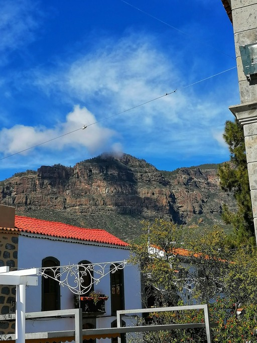
Ayagaures to Tunte
san bartolomé de tirajana
--
1
This day started with a little stroll and ended up on a
full scale 8hr hike (including breaks and lunch) to Tunte
and back 27km round trip. The route takes you up through the
Barranco crossing over the peak and then back down the other
side arriving into Tunte. This is an absolutely stunning route,
the views are breathtaking however the initial part of the walk
is difficult and gains alot of altitude. The silence of nature
and the smell of the pine trees make this one a good mood lifter.
Make sure you are fully prepared with enough water and snacks.
The route is accessed via Presa de Gambuesa where you park the car.
Cross over the dam and follow the winding road which takes you upto
the trail to Tunte. This is one of my favourites as the views need
to be seen to be believed.
barranco del toro
san bartolomé de tirajana
--
--
Barranco del Toro is a deep rugged valley in the south of
the island near San Agustín. There are 2 ways to see this
valley. You can either walk from its very start which is first
located by walking through Barranco de los Guinchos or you can
take the high path along the peak of Barranco de Veguas and come
down into Barranco del Toro at the other end. The first option
involves a more difficult hike and scrambling up steep waterfalls.
The second route is the one I chose at it was a nice steady climb
at the valley tops with great views. Once at the end of the trail
the path does become alot more difficult as you descend down into
Barranco del Toro where the pools and waterfalls are located. The
views and rugged terrain are stunning and the route takes you through
a goat farm where you walk amongst the flock and can even buy the cheese
they make on the farm. The route I took is accessed to the left of the
Gloria Palace Hotel where the staff car park is. Walk to the top of the
car park and you will see the tunnel under the GC-1 which is the start
of the route.
Llanos de la Pez (circular route)
san bartolomé de tirajana
--
--
Llanos de la Pez is a beautiful Nature Reserve located in the center of the island.
Its a beautiful spot for camping or for picnics. The area is also the start of many
hiking trails. The one I chose today was the circular route.
The route takes you through the pine forest, across rocky outcrops and up to the peaks
where you get some amazing views of Roque Nublo. You can see across the Island and on
clear days you get beautiful views of Tenerife.
About half way through the trail when you get to the tops the trails split into many
different routes.
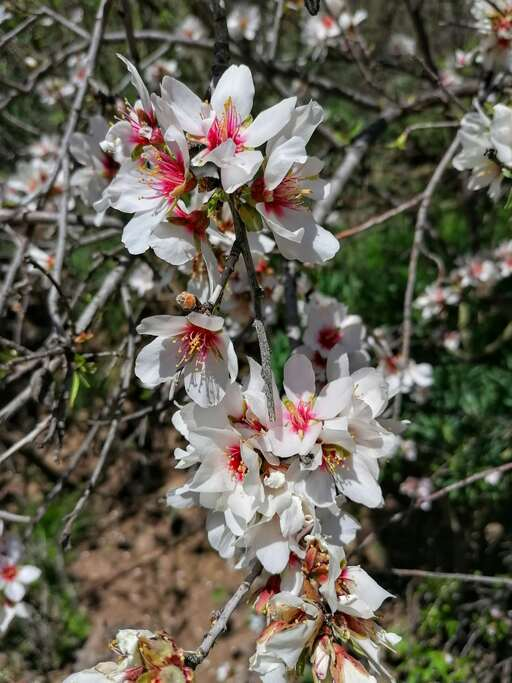
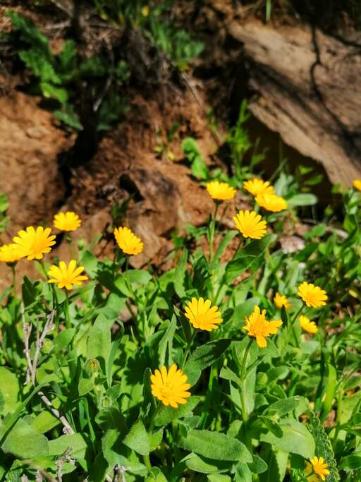
.
barranco de guayadeque
ingenio
--
--
This beautiful valley is one of my favourites and close to my home.
I took a hike during the Almond Blossom season (end Jan beginning Feb)
and all I can say is wow. The route starts at the last restaurant on
the main access road and takes you up into the heart of the valley.
Passing through small fincas and old abandoned buildings upto the Caldera.
You can also continue on upto Pico de las Nieves (this route will be a future update).
The valley itself is stunning and peaceful, well worth a visit.
barranco oscuro
moya
--
--
This walk was a true hidden gem. Browsing through google maps
I spotted this Barranco and thought id go have a look. Located
in the north of the island so a little drive to get to it but it
was worth it. Parked the car on the side of a back road and saw
a sign post for the start of the trail. After about 5 mins o
the trail the views opened up to a breathtaking view down into
the valley which was dotted with Fincas full with fruit trees.
The trail winds its way down into the valley and onto the main
road through the bottom. The walk is beautiful and covered with
flowers and fruit trees. there is another trail half way up the
road which then climbs up the other side. we followed this and
again were rewarded with amazing views. The path up is a little
steep in places but well worth it.
Llano de la Pez - Ventana del Nublo
san bartolomé de tirajana
--
--
Llanos de la Pez is a beautiful area up in the
mountains and the start of many different trails.
well worth a visit if you want to explore. I chose
this time to do the circular route and head upto
Ventana del Nublo. The views are breathtaking and
have to be seen to be believed.
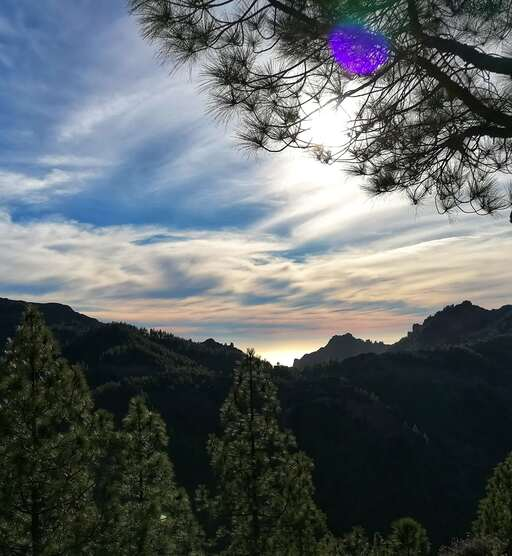
Presa de Los Hornos - Llanos de la Pez
tejeda
--
--
This is a very beautiful area of the Island
with many trails. This time I started at Mirador
Presa de Los Hornos and took the trail across the Presa
and upto Llanos de la Pez. The views are stunning. You
can take in the the scents of the pine forrest and the views
of Roque Nublo, Roque Bentayga and across to Tenerife. This
is also a great place if you want to take in a beautiful sunset.
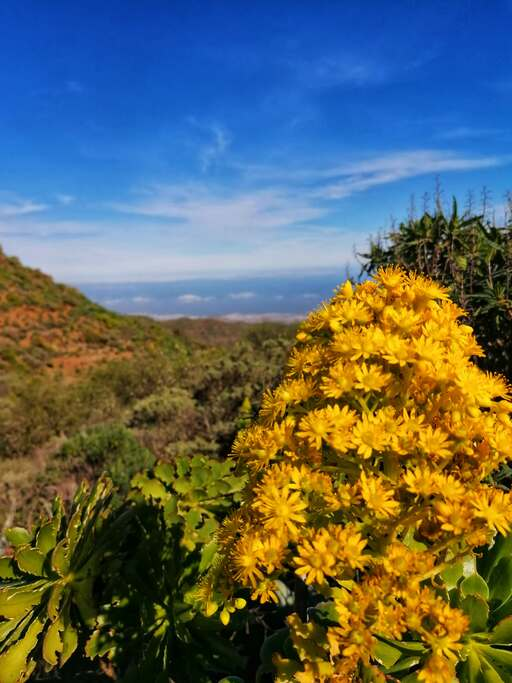
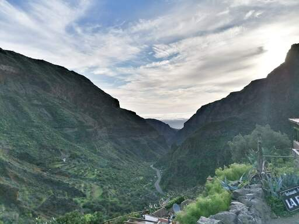
Barranco de Guayadeque - Pico de las Nieves
ingenio
--
--
If you are up for a challenge and dont mind a long hike
(28km round trip) then this route is for you. Starting in
Barranco Guayadeque you make your way through this stunning
valley and upto the start of the trail towards Pico de Las
Nieves. The climb here takes its toll on the legs but the views
are worth it. On the day I went the skies were clear and I could
see across to Fuerteventura. The trail then splits off into other
trails however I continued upto Pico de Las Nieves. The views
from the top are amazing and could see a clear view of Tenerife
and La Gomera. On the return I took a different trail back which
stayed above Barranco Guayadeque and came down at the middle of the valley.
Stunning views and lots of plants and flowers to enjoy along the way. One
of my all time favourites.
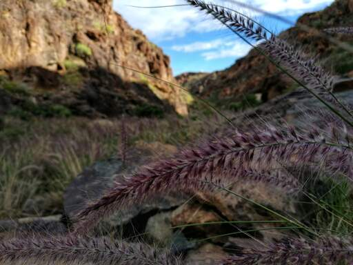
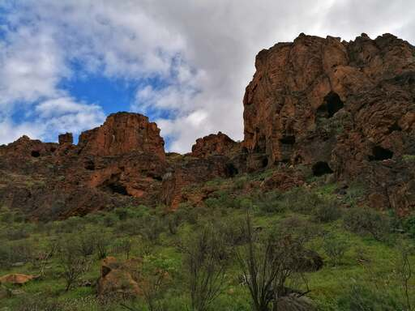
Barranco del Hondo
san bartolomé de tirajana
--
--
This Barranco is located down the East Coast accessed to the left of the cement
works at Playa el Cardon. The route starts to the left of the cement works and
runs along the very edge until you reach the entrance of the Barranco. The Barranco
itself has dramatic steep walls with numerous caves. I visited after the rains so there
were many natural pools and the stream still flowing. You can also access the Barranco
by taking the route upto the Arco del Coronadero which is a natural stone arch giving
amazing views down into Barranco del Hondo. From here you can take the steep trail down
into the Barranco and then walk the route back out.
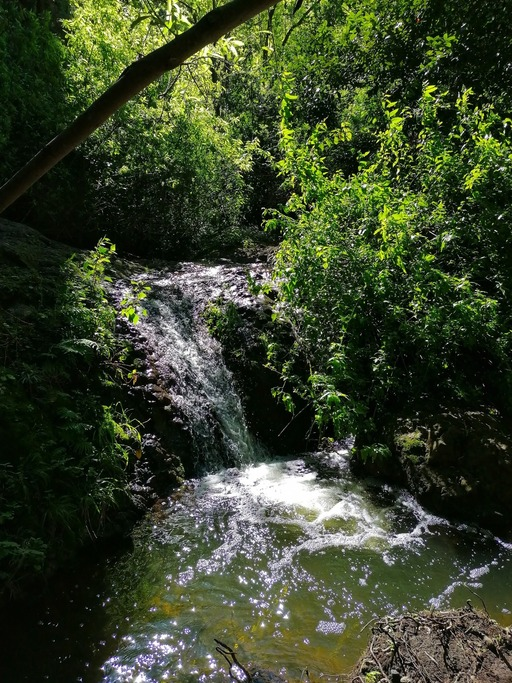
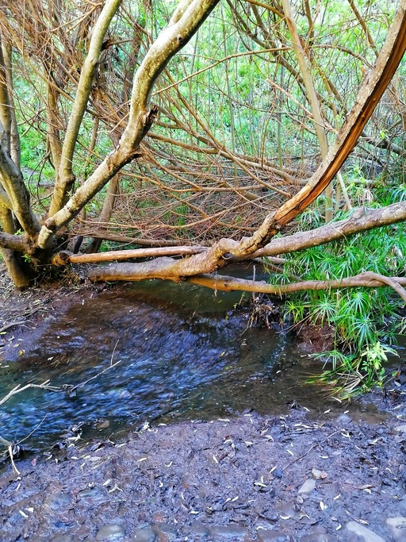
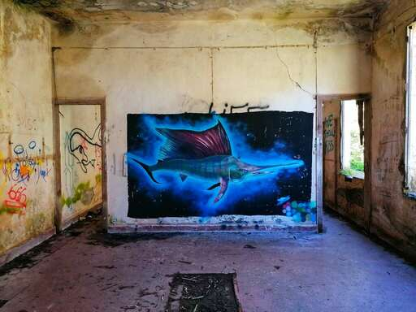
Firgas - Barranco De Azuaje - Barranco de la Virgen
firgas
--
--
Today we took a beautiful trail starting in Firgas and making our way
down into Barranco De Azuaje. The route down is stunning with lots of
different plants and trees and great views. The trail brings you into the
Barranco at the abandoned hotel with its displays of grafiti art. We then
followed the trail upstream which involved crossing the water backwards and
forwards several times using stepping stones and fallen trees. There are numerous
waterfalls and pools along the route and some great photo opportunities. This route
was quite fun as it involved some climbing using ropes that are already in place.
The route then continued into Barranco de la Virgen before we climbed back up the
valley and headed back towards Firgas. Well worth doing if you fancy a trail with
a bit of everything.
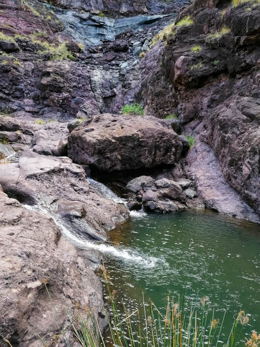
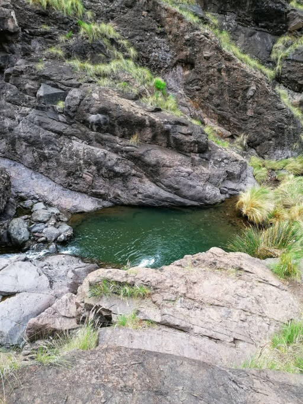
Charco Azul
agaete
--
--
Quite a popular one on the island due to its constant water
flow and easy access. Located in the North of the Island in
the village El Risco. There are numerous natural pools and
beautiful views as you make your way to the big falls of Charco
Azul. After the winter rains the flow is stronger and the pools
are bigger but anytime of year its a beautiful place to visit.
barranco del Águila/Tariscal
san bartolomé de tirajana
--
--
Located down the East Coast of the island starting at Sioux City.
This Barranco is very peaceful as its access is a little more difficult.
You must use the Barranco to the right of Sioux City then follow the road
through the tunnel under the GC1, continue on this road and you will arrive
at the start of the Barranco at the end of Sioux City. After the winter rains
the Barranco has running water and numerous natural pools. The Barranco walls are
dotted with countless caves and dramatic walls. The walk becomes more difficult towards
the end as you have to follow the stream bed and climb many boulders to reach the big
waterfall at the end of the route. Note this waterfall is only active just after the rains.
presa de la gambuesa - barranco de la data
san bartolomé de tirajana
--
--
Starting at the beautiful Presa de la Gambuesa, follow the dirt road up
towards Las Tedras. This is one of my favourite routes as the views along
the trail are breathtaking. The walk itself is fairly easy with only a little
climb at the start. Once at the top the views are worth it. Follow the road for
about an hour and you will come to an area where you can make it down to some
amazing natural pools. Crystal clear waters and a stunning landscape make this an
ideal area to visit for the day and take a swim in the refreshing mountain pools.
If you continue on the trail further you will find some bigger pools to enjoy.
Presa de Los Perez - Tamadaba - Mirador Llanos de la Mimbre
agaete
--
--
We took the drive up through Artenara towards Presa de Los Perez where we stared the trail.
The views on the drive up are amazing. Crossing the Dam wall at Presa de Los Perez you begin
the climb up into the Tamadaba National Park. Its a long climb upto the top but the views are worth it.
Once at the top we followed the trail through the pine forest towards Mirador Llanos de la Mimbre.
This wooden platform on the edge of the cliffs gives you one of the best viewpoints on the island.
The height alone makes you feel like you are flying but the views need to be seen to be believed.
The day I went was a nice clear day and the view of Tenerife was clear enough to be able to see
the buildings in Santa Cruz.
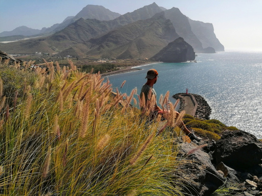
Playa de La Aldea - La Cola del Dragón
la aldea de san nicolás
--
--
This is a circular route in the North of the Island starting
behind the tourist information center at Playa de la Aldea.
The route takes you into the valley and up towards the viewpoint
at La Cola del Dragon. The views here are very dramatic with steep
cliff walls towering over the Atlantic Ocean. You then make your way
back towards the viewpoint at Punta de La Aldea before following the
trail back down to the secluded beach of Playa de El Puerto. We stopped
here for a while to enjoy a dip in the Ocean and cool off before finishing
the route.
barranco del pino gordo
la aldea de san nicolás
--
--
Located in the North of the Island near La Aldea. The Barranco has a very dramatic
feel with steep cliffs, waterfalls and plenty of mountain pools to swim in after
the winter rains. The views in this area are some of my favourites and the walk through
the valley is stunning. If you dont mind a long drive upto the North then this is well
worth going to visit.
Degollada de las Yeguas - Fataga
san bartolomé de tirajana
--
--
This is one of the most difficult routes I have taken, mostly due
to the very steep decent down into Fataga at the end of the trail.
When I say steep I actually mean climbing down a cliff wall with very
little room for error. Adrenaline was pumping for this one. The views
along the way were amazing looking down into the valley. As this route
is oneway we had to take a bus back from Fataga to the viewpoint where
we started the trail. As the next bus was 3 hours wait we decided to stop
and take in some delicious tapas in Restaurante Albaricoque.
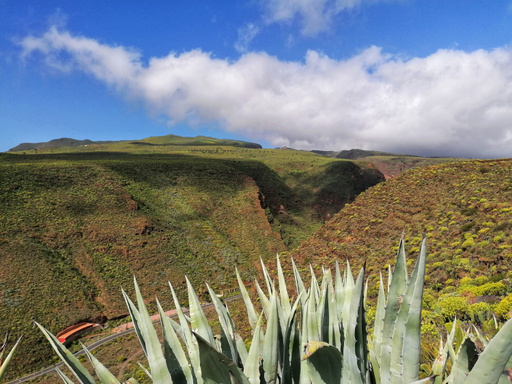
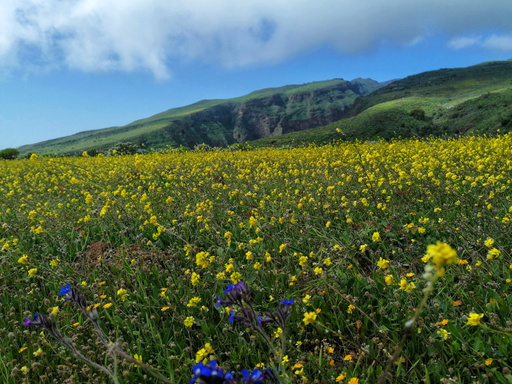
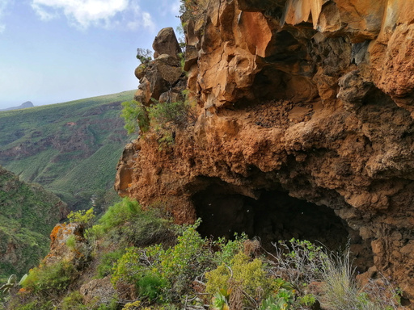
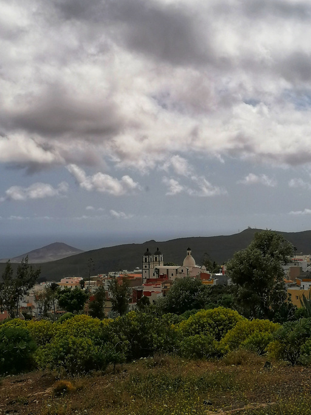
Ingenio - La Atalaya - Seto grillo
ingenio
--
--
This route started at the top of my home town Ingenio and took us along
the top of Barranco Quayadeque and upto La Atalya and the caves before
making our way back down on the trail towards Seto Grillo and arriving
back into Ingenio. This route took us through some beautiful wild flower
meadows with views into Guayadeque and down towards the coast.
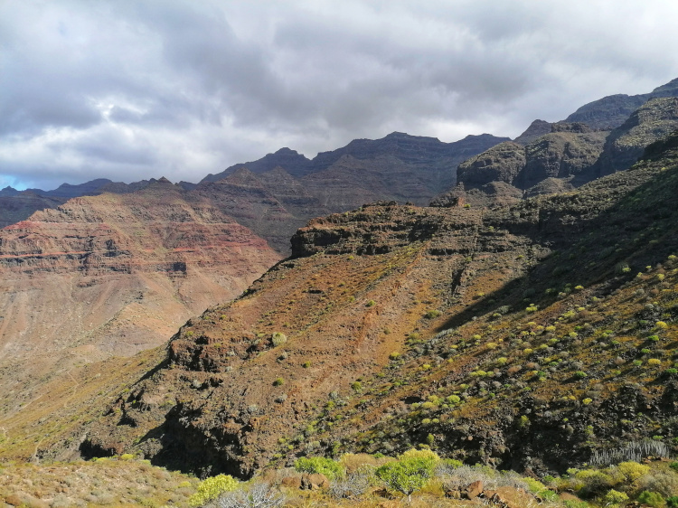
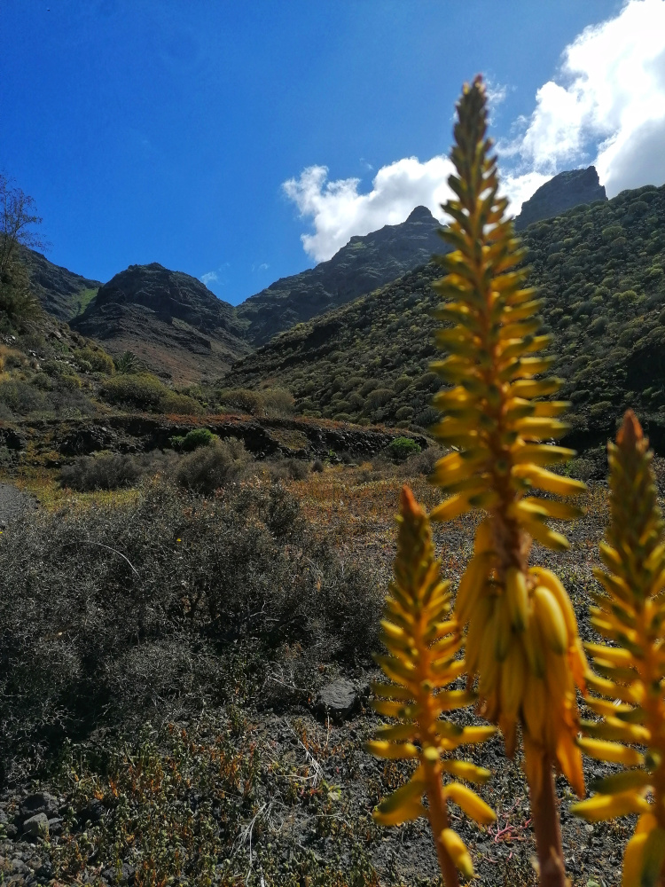
tasartico - güigüi
la aldea de san nicolás
--
--
This is one of the most iconic routes on the Island and almost a right of passage.
After trying this route 1.5 years ago and swearing never to do it again, I decided
id give it another try as I had been doing daily hikes for the last month and felt much stronger.
This route is a difficult one on the legs. There is a long steep climb upto the peak before you
cross over and descend down the other side towards Güigüi. The last time I tried this route it
took 2hrs 30 mins each way however this time it only took 1hr 40 mins each way so a good fitness
level makes it easier. The views along the route are very dramatic with steep cliffs, deep valleys
and Ocean views. The beach itself is nothing exciting and very similar to Guayedra beach near Puerto
de Las Nieves. If you do want to attempt this one make so you wear hiking boots and take plenty of
food and water as you will need it.
Ayagaures- Parque Natural de Pilancones - Las Tederas
san bartolomé de tirajana
--
--
This National Park is well worth a visit, dramatic landscapes,
natural pools, pine forests and amazing views. I have visited
this area several times however this time we decided to do the circular route,
19km of breathtaking and and forever changing views. The route starts at Presa de
Gambuesa and up towards Las Tederas where the natural pools are located. From here the
route moves into the pine forest, please be aware the signs say the route is closed due to
landslide however there is a path through but take this at your own risk. Once into the forest the
views are beautiful, steep valley walls and a pine scented walkway. The path does take a steep
climb up after a while where you can continue on to Tunte (mentioned in an earlier update) or
you can head back towards Ayagaures. You are much higher on this side of the valley
so the views are incredible.
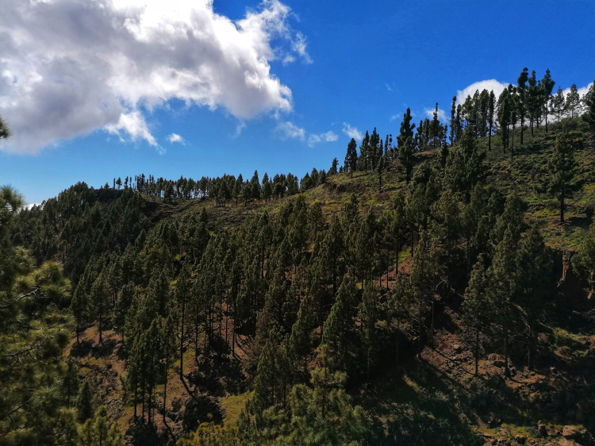
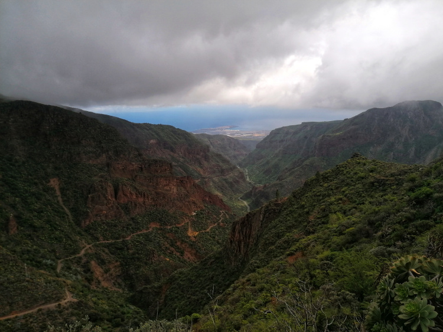
Barranco Guayadeque – Cruz del Socorro circular
agüimes
--
--
I have visited this barranco many times and taken different routes as
mentioned in previous blogs. This time we chose the Circular route upto
Cruz del Socorro and across the top of the ravine back to the start. This
16km route is stunning. The valley is filled with wild flowers and old abandoned
buildings. The climb at the Caldera is tough on the legs but it takes you up
through the pine trees to Cruz del Socorro. At this point you can choose several
different routes. We chose the route towards Santa Lucia which takes you along a
dirt road across the top of the valley with amazing views on both sides. At the
end of the road you begin the climb back down into Barranco Guayadeque. The path
takes you along the valley walls about half way back into the barranco where you
meet the original path back towards your car. Amazing views and an abundance of
wild flowers make this route very special.
Guayadeque - Cueva Bermeja - Santa Lucia
agüimes
--
--
This 22km return route really is beautiful. Wild flower meadows,
mountain top views and a historical town. Starting in Guayadeque
at the carpark below the last restaurants the path takes you up a
very steep and intense climb upto the top of the barranco. It took
us about 45 mins climbing to reach the top. Nerves of steel required
as the climb is very steep and you really are walking on the edge.
Once at the top you come to the Cueva Bermeja with breath taking views
down into Barranco Guayadeque. Continue on a little further and you
reach the sign for several different routes. This time we took the
path for Santa Lucia. From this point the route to Santa Lucia is
mostly downhill. The path takes you through beautiful flower meadows
with views down to the coast and across several other barrancos.
Once you reach the peak looking down to Santa Lucia the views have
to be seen to be believed, stunning views down to the town with
mountain peaks behind. The route takes a winding path down into the
town of Santa Lucia where we stopped to take a look in the church
before having lunch. On the return the route is mostly uphill and
was quite tiring but again the views are worth it, we also took a
small detour to look at an abandoned mine with its rail tracks. In
total it took us 5 hours walking with an hour stop for lunch in
Santa Lucia. A great trail if you want some views.
camino de santiago
*** updates to follow! ***
about me
My name is Dean and I want to share my Island adventures with you all.
Originally from the UK but now living on the beautiful Island of Gran Canaria off the Northwest coast of Africa.
I moved to the island Feb 2017 and it was the best decision of my life. I have a passion for adventure and love to explore in my free time. The best thing is to jump into your car head for somewhere new and see what you find. This is how I’ve found many of this islands secrets.
I decided to start this blog after several friends suggested I start one after seeing the pictures I had taken during my days out exploring.
gran canaria
Gran Canaria is a small island located in the Atlantic
Ocean and is approximately 150 kilometres off the northwestern
coast of Africa. With an area of 1,560 km2 (602 sq. mi) and an
altitude of 1,956 m (6,417 ft) at Morro de la Agujereada, Gran
Canaria is the third largest island of the archipelago in both
area and altitude.


 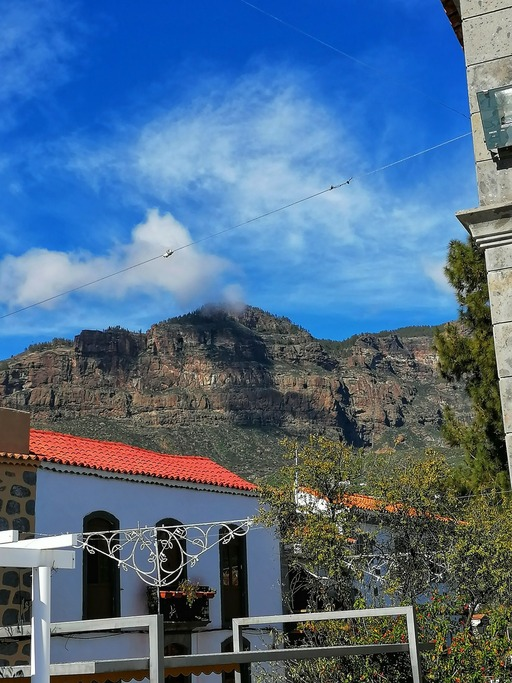
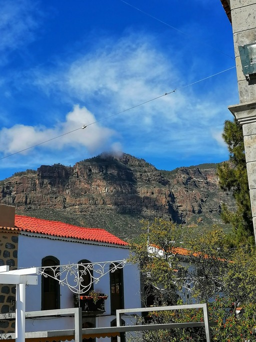


 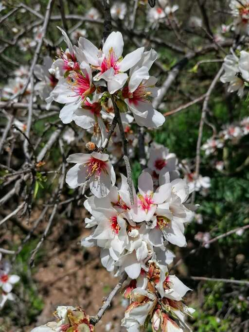
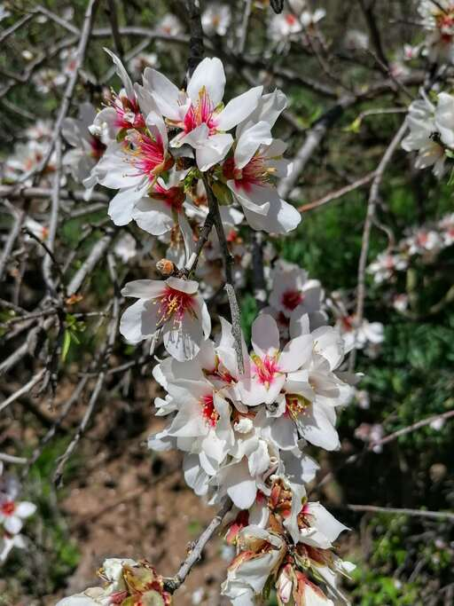


 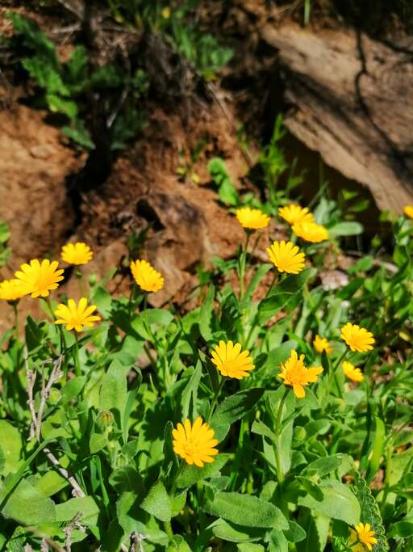
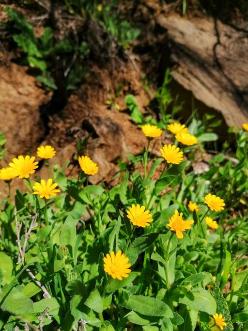


 .
.


 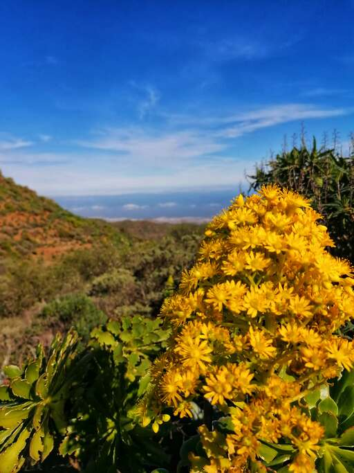
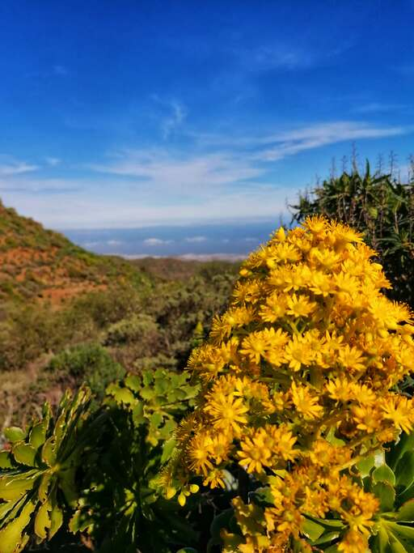


 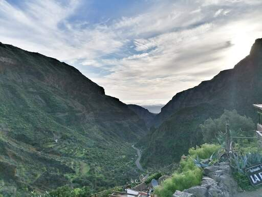
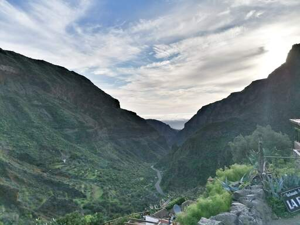


 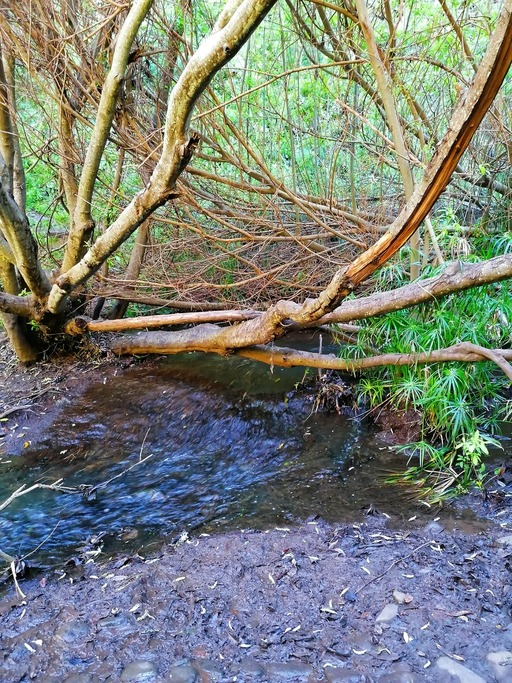
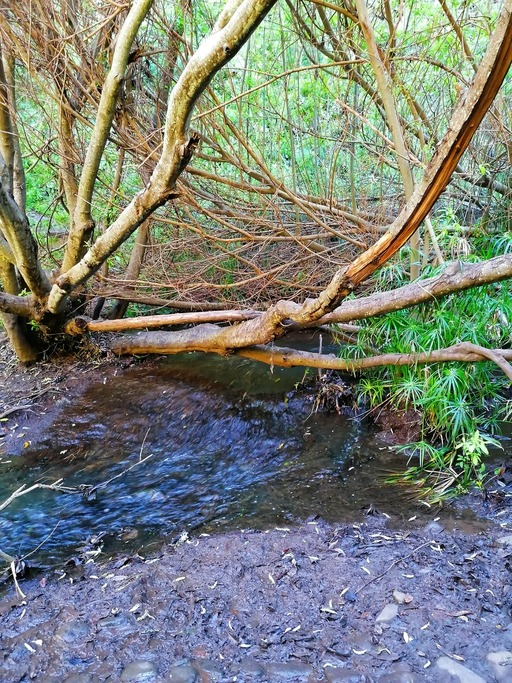
 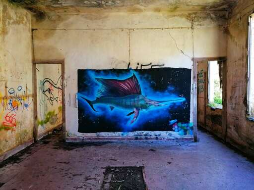
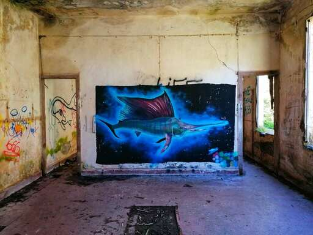


 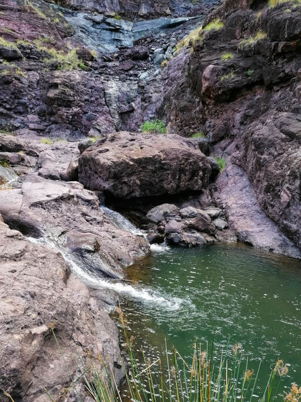
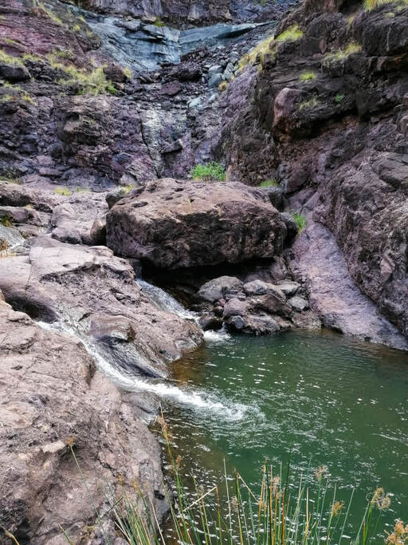


 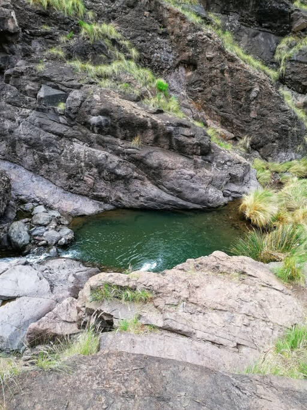
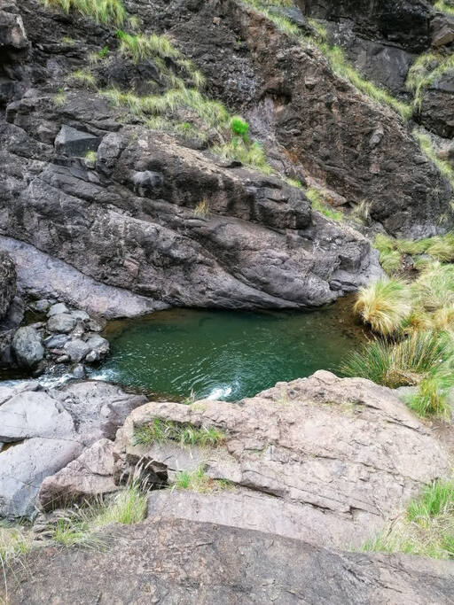


 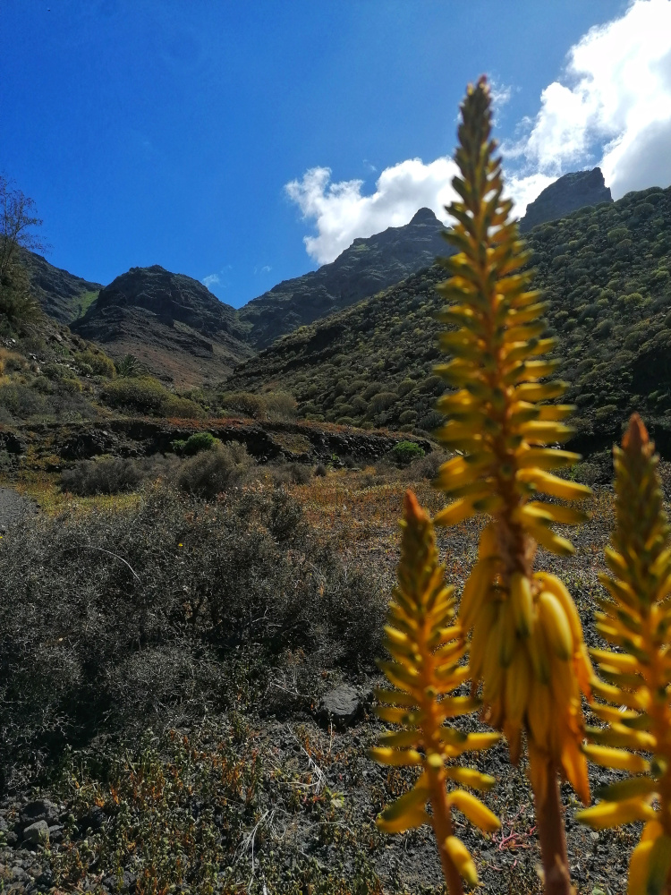
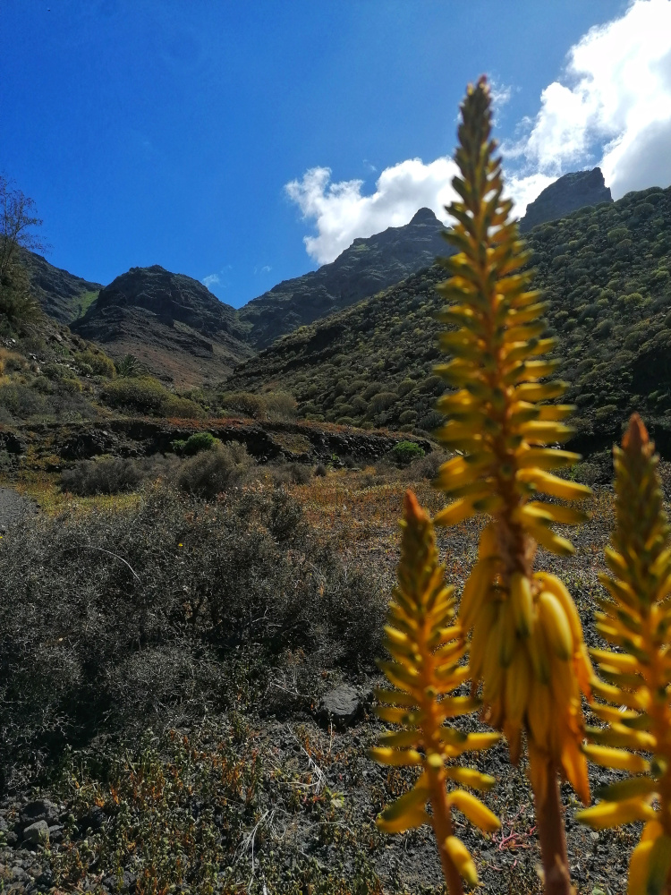


 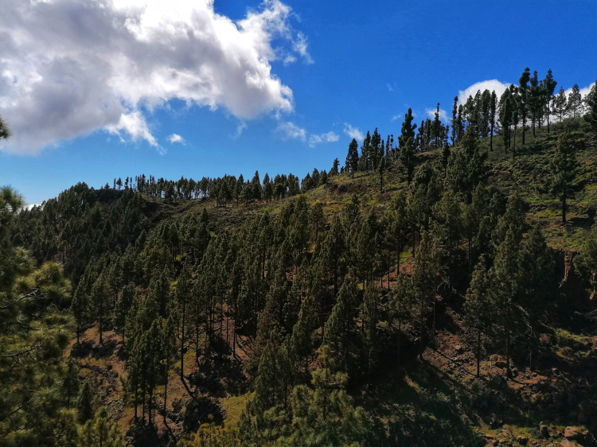
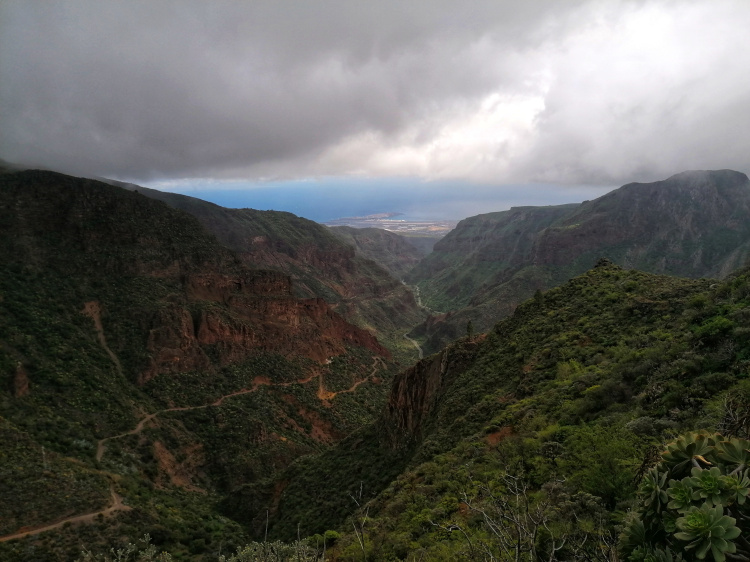
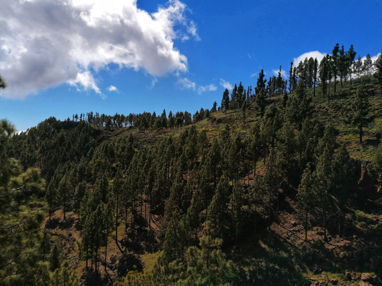
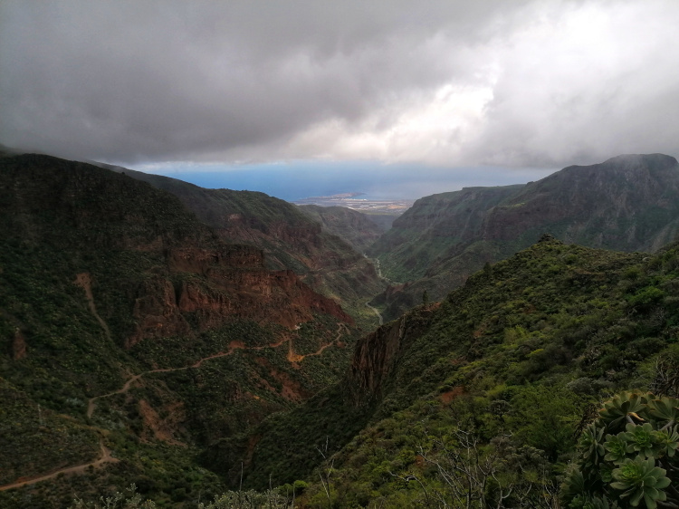